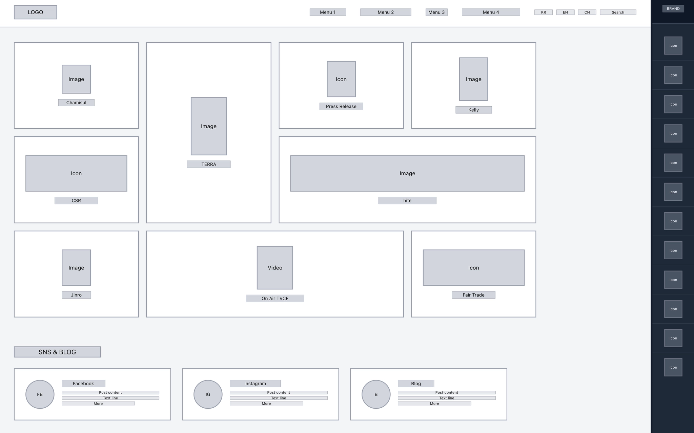
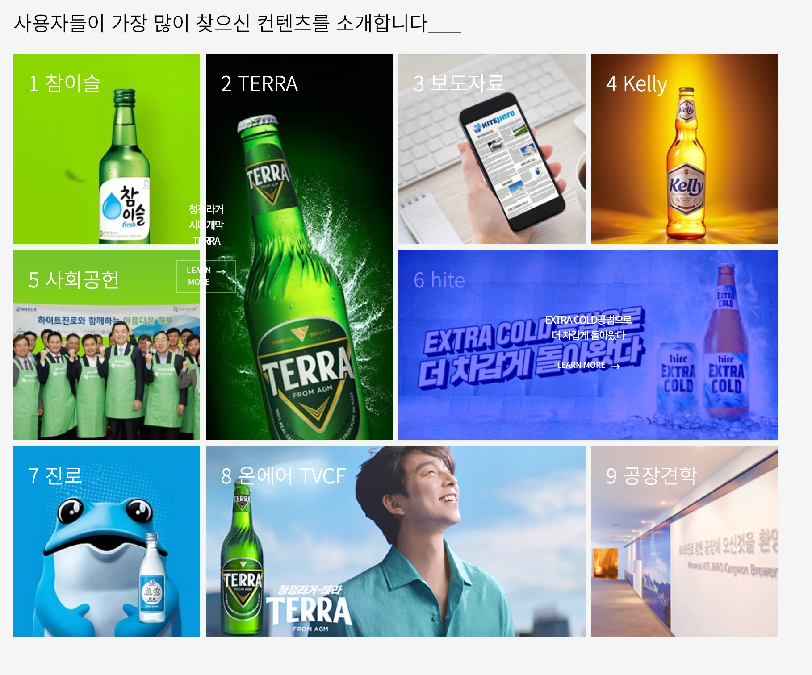
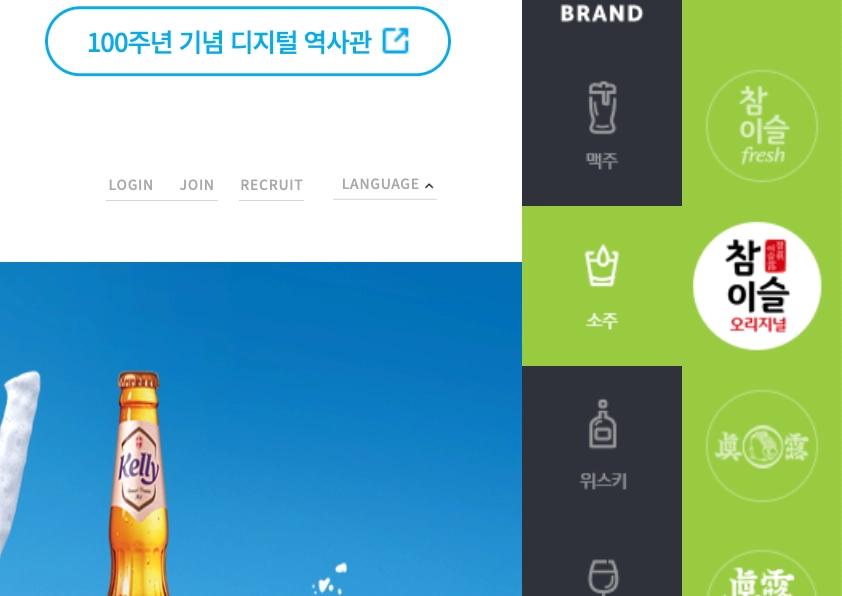

03
HiteJinro
A redesign of a visually heavy brand site — reorganizing its information hierarchy so users can find what they came for faster, without losing the brand's tone.

The Brief
The original site had heavy visual elements but an unclear information hierarchy, making it hard for users to quickly find key content. The goal was to improve information accessibility and create a more intuitive browsing experience — while keeping the brand's visual tone intact.
Process
-
01Analysis & Priorities
- Analyzed the original layout and content structure, identified key user needs and navigation priorities
-
02Wireframes
- Reorganized content blocks and simplified the navigation structure in low-fidelity wireframes

Grayscale wireframe — logo, top nav, and a right-hand icon rail planned early to anchor the category structure. -
03Visual Design
- Designed a grid layout to surface the most-searched content and a sidebar nav for category browsing

"가장 많이 찾으신 컨텐츠" — a 9-tile grid pulling the site's most-searched content to the front.
Hero banner with the redesigned right-side category rail for quick product-line navigation."최신 하이트진로 SNS" — Facebook, Instagram, and Blog feeds surfaced directly on the homepage. -
04Build
- Structured with HTML5, styled with CSS3, interactions in jQuery
- Integrated Slick Slider for smooth content browsing
-
05Cross-Browser QA
- Tested and debugged across browsers for consistent behavior
Key Decisions
Simplified menu structure
Reorganized visual hierarchy
Sliders to guide exploration
Adjusted spacing & contrast for clarity
Preserved brand tone
What I Learned
I saw firsthand how layout structure directly shapes user flow, and practiced translating design decisions into clean, functional code. Debugging and refining the build gave me a much deeper feel for how small UI interactions add up to affect the overall experience.
9
Content tiles reorganized into a single "most searched" grid, pulling key brand content up front